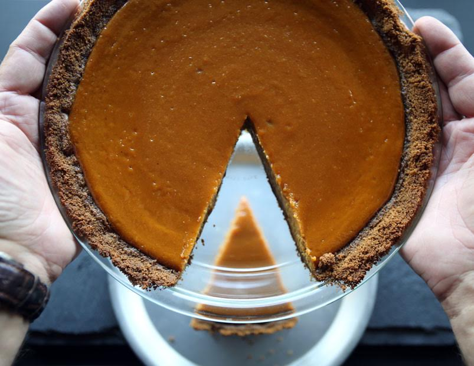

Alton Brown Pumpkin Pie Recipe

Description
A traditional pumpkin pie serving 8 people
Ingredients
- gingersnap cookies
- dark brown sugar
- ground ginger
- unsalted butter, melted
- can pumpkin puree
- half and half
- freshly grated nutmeg
- kosher salt
- large eggs
- large egg yolk
Steps
- Heat the oven to 350ºF
-
Make the crust: Combine the gingersnaps, brown sugar, and ginger in a food
processor. Process until the cookies are fine crumbs. Drizzle the butter
into the crumb mixture. Pulse 8 to 10 times to combine.
-
Press the gingersnap mixture into the bottom, up the sides, and just over
the lip of a 9-inch glass pie dish. Place on a half-sheet pan and bake until
lightly browned, 10 to 12 minutes. Cool the crust at least 10 minutes before
filling.
-
Bring the pumpkin puree to a simmer over medium heat in a 2-quart saucepan.
Cook, stirring occasionally, for 2 to 3 minutes, or until slightly
thickened. Add the half-and-half, nutmeg, and salt. Stir and return the
mixture to a simmer. Remove from the heat and cool for 10 minutes.
-
Whisk the brown sugar, eggs, and egg yolk in a large bowl until smooth. Add
the pumpkin mixture and whisk until thoroughly combined. Pour the filling
into the warm pie crust and bake on the same half-sheet pan until the center
jiggles slightly but the sides of the filling are set, 45 to 50 minutes.
Cool on a cooling rack for at least 2 hours before slicing. The pie can be
made and refrigerated up to 2 days in advance — it's best the day after it
is made.
-
Evenly divide the crust mixture among 5 (5-inch) pie tins and bake on a
half-sheet pan for 5 minutes. Cool for 10 minutes.
-
Divide the filling evenly among the pans. Bake on the same half-sheet pan
until the center juggles slightly but the sides of the filling are set,
about 25 minutes. Cool on a cooling rack for 2 hours.
-
Spread 1 teaspoon of the brown sugar on the top of each pie. Melt the sugar
using a blowtorch to form a crisp top. Cool for 5 minutes before serving.